付録B.立体求積法のリスト¶
積分法は2種類あります。任意の関数の多項式と近似された積分（立方体式）の完全積分。完全積分は、すべての要素が多項式であり、幾何変換が線形である場合にのみ使用できます。
積分法の記述子は、次の関数を使用します。
ppi = getfem::int_method_descriptor("name of method");
"name of method" は既存のメソッドの中から選択される文字列です。
tests ディレクトリにある integration プログラムは、それぞれの積分法の次数を列挙して確認します。
完全積分法¶
GetFEM++ の完全積分法のセットを与えます。これは、多項式が完全積分されていることを意味します。しかし、その使用は（非常に）制限されており、推奨されていません。完全積分法の使用は、多項式のための低水準総称構築に限定されています。線形変換を伴う  等価要素と線形項では制限されています。高水準の汎用構築でこれらを使用することはできません。
等価要素と線形項では制限されています。高水準の汎用構築でこれらを使用することはできません。
利用可能な完全積分法のリストは以下の通りです
完全積分法 "IM_NONE()" ダミー積分法
"IM_EXACT_SIMPLEX(n)" 次元 n を参照するシンプレックスの単体における多項式の完全積分の記述
"IM_PRODUCT(a, b)" a と b の凸包の直接の積である凸包面上の完全積分の記述
"IM_EXACT_PARALLELEPIPED(n)" 次元 n を参照する平行6面体上の多項式の完全積分の記述
"IM_EXACT_PRISM(n)" 次元 n を参照するプリズムへの多項式の完全積分の記述
平行6面体またはプリズムに完全積分法の記述が存在しても、ほとんどの場合、そのような要素の幾何学的変換は非線形であり、完全積分は使用できません。
Newton Cotes積分法¶
シンプレックス、平行6面体、およびプリズムの K 次の Newton Cotes 積分は、 "IM_NC(N,K)" 、 "IM_NC_PARALLELEPIPED(N,K)" 、 "IM_NC_PRISM(N,K)" とします。
1次元のGauss積分法¶
K 次（ K/2+1 点）のGauss-Legendreは、 "IM_GAUSS1D(K)" と表記します。K 次（ K/2+1 点を持つ）のGauss-Lobatto-Legendre積分は "IM_GAUSSLOBATTO1D(K)" と表記します。これは K の奇数値に対してのみ利用可能です。Gauss-Lobatto積分は、集中質量の挙動をするために "FEM_PK_GAUSSLOBATTO1D(K/2)" と一緒に使用して一括処理を実行できます。
2次元のGauss積分法¶
2次元の積分法 図
座標 (x, y)
重み
呼び出し/次数関数
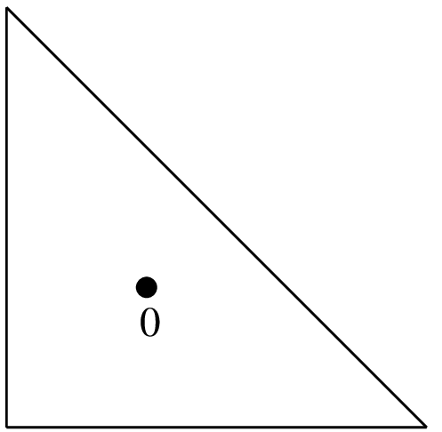 (1/3, 1/3) 1/2 "IM_TRIANGLE(1)"
1点、次数1。
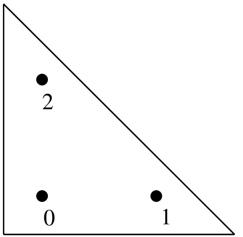 (1/6, 1/6)
(2/3, 1/6)
(1/6, 2/3)
1/6
1/6
1/6
"IM_TRIANGLE(2)"
3点、次数2。
2次元の積分法 図
座標 (x, y)
重み
呼び出し/次数関数
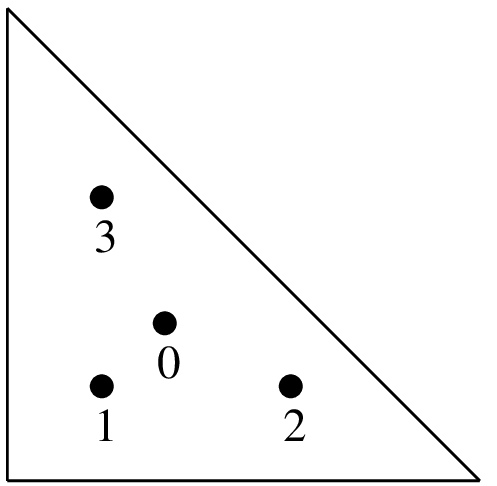 (1/3, 1/3)
(1/5, 1/5)
(3/5, 1/5)
(1/5, 3/5)
-27/96
25/96
25/96
25/96
"IM_TRIANGLE(3)"
4点、次数3。
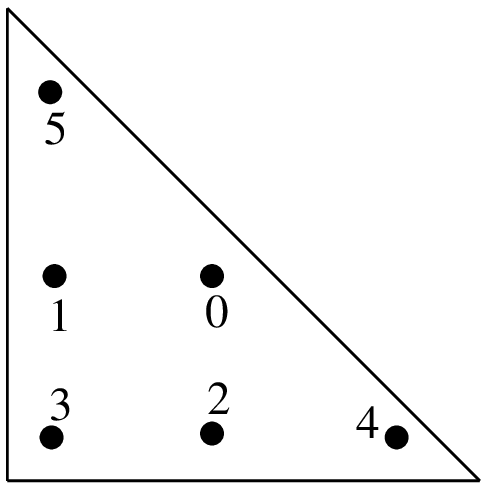 (a, a)
(1-2a, a)
(a, 1-2a)
(b, b)
(1-2b, b)
(b, 1-2b)
c
c
c
d
d
d
"IM_TRIANGLE(4)"
6点、次数4


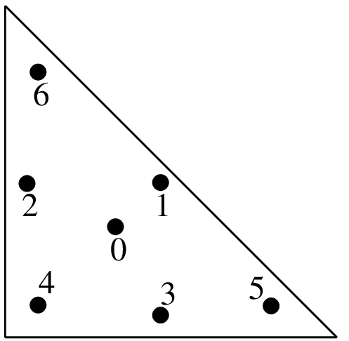 (1/3, 1/3)
(a, a)
(1-2a, a)
(a, 1-2a)
(b, b)
(1-2b, b)
(b, 1-2b)
9/80
c
c
c
d
d
d
"IM_TRIANGLE(5)"
7点、次数5


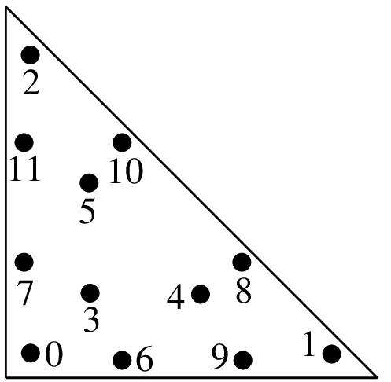 (a, a)
(1-2a, a)
(a, 1-2a)
(b, b)
(1-2b, b)
(b, 1-2b)
(c, d)
(d, c)
(1-c-d, c)
(1-c-d, d)
(c, 1-c-d)
(d, 1-c-d)
e
e
e
f
f
f
g
g
g
g
g
g
"IM_TRIANGLE(6)"
12点、次数6


2次元の積分法 図
座標 (x, y)
重み
呼び出し/次数関数
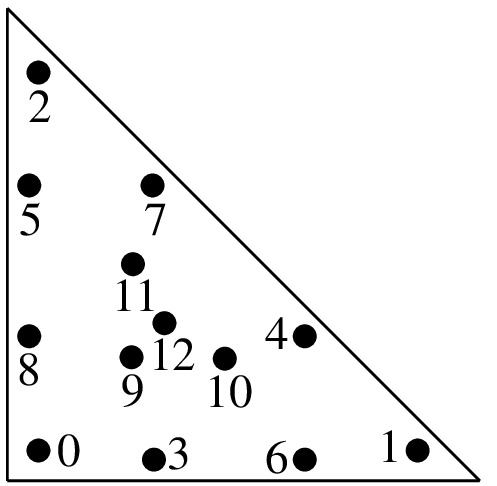 (a, a)
(b, a)
(a, b)
(c, e)
(d, c)
(e, d)
(d, e)
(c, d)
(e, c)
(f, f)
(g, f)
(f, g)
(1/3, 1/3)
h
h
h
i
i
i
i
i
i
j
j
j
k
"IM_TRIANGLE(7)"
13点、次数7


"IM_TRIANGLE(8)"
（[EncyclopCubature] を参照してください）
"IM_TRIANGLE(9)"
（[EncyclopCubature] を参照してください）
"IM_TRIANGLE(10)"
（[EncyclopCubature] を参照してください）
"IM_TRIANGLE(13)"
（[EncyclopCubature] を参照してください）
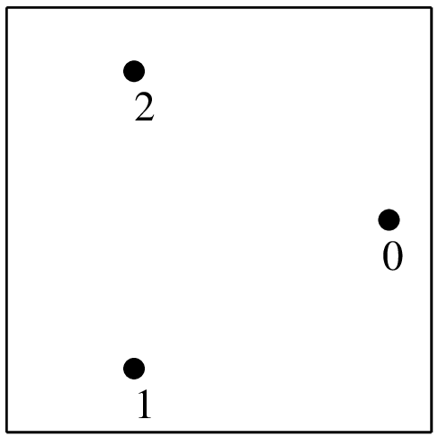 (
)
(
)
1/3
1/3
"IM_QUAD(2)"
3点、次数2
2次元の積分法 図
座標 (x, y)
重み
呼び出し/次数関数
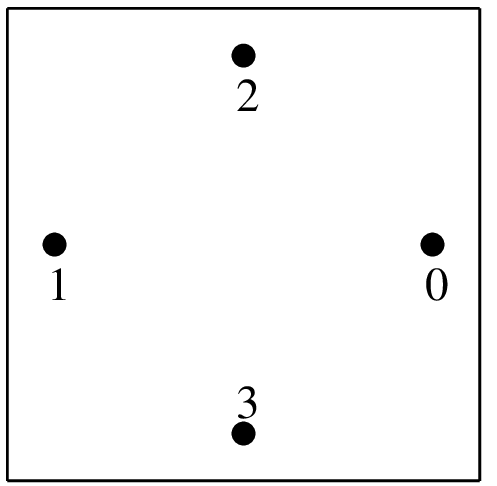 (
)
(
)
1/4
1/4
"IM_QUAD(3)"
4点、次数3
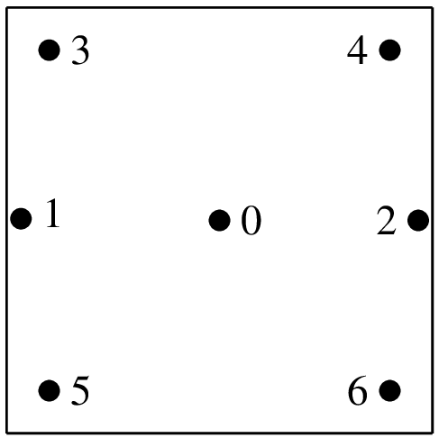 (
)
(
)
(
)
2/7
5/63
5/36
"IM_QUAD(5)"
7点、次数5
"IM_QUAD(7)"
12点、次数7
"IM_QUAD(9)"
20点、次数9
"IM_QUAD(17)"
70点、次数17


1次元Gaussの積分の直積である "IM_GAUSS_PARALLELEPIPED(n,k)" もあります。
重要な注記: IM_QUAD(k) は多項式の次数  に対して厳密であり、
に対して厳密であり、  多項式の次数
多項式の次数  を持つことを忘れないでください。例えば、 IM_QUAD(7) は、2つの
を持つことを忘れないでください。例えば、 IM_QUAD(7) は、2つの  多項式の積を完全積分することはできません。一方、IM_GAUSS_PARALLELEPIPED(2,4) は、その積を完全積分することができます...
多項式の積を完全積分することはできません。一方、IM_GAUSS_PARALLELEPIPED(2,4) は、その積を完全積分することができます...
3次元のGauss積分法¶
3次元の積分法 図
座標 (x, y)
重み
呼び出し/次数関数
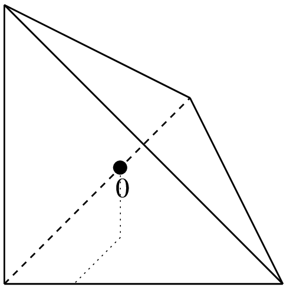 (1/4, 1/4, 1/4) 1/6 "IM_TETRAHEDRON(1)"
1点、次数1
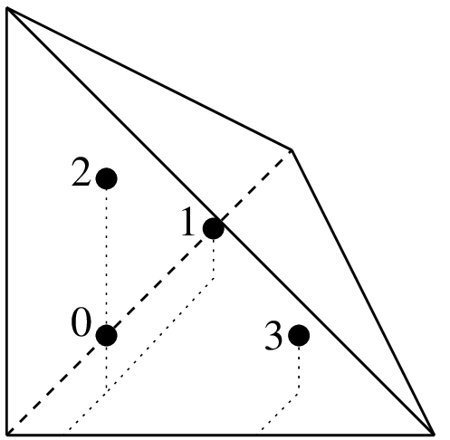
1/24
1/24
1/24
1/24
"IM_TETRAHEDRON(2)"
4 points, order 2
3次元の積分法 図
座標 (x, y)
重み
呼び出し/次数関数
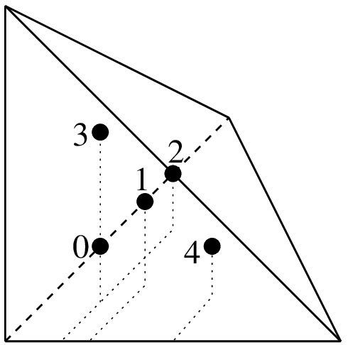 (1/4, 1/4, 1/4)
(1/6, 1/6, 1/6)
(1/6, 1/2, 1/6)
(1/6, 1/6, 1/2)
(1/2, 1/6, 1/6)
-2/15
3/40
3/40
3/40
3/40
"IM_TETRAHEDRON(3)"
5点、次数3
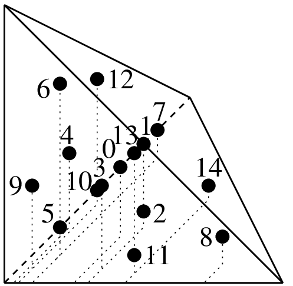
8/405
5/567
5/567
5/567
5/567
5/567
5/567
"IM_TETRAHEDRON(5)"
15点、次数5


{kind=link}
{kind=link}
{kind=link}
{kind=link}
{kind=link}
{kind=link}
{kind=link}
{kind=link}
{kind=link}
{kind=link}
{kind=link}
{kind=link}
{kind=link}
{kind=link}
その他の方法は次のとおりです。
名前
要素型
点数
"IM_TETRAHEDRON(6)" 4面体
24 "IM_TETRAHEDRON(8)" 4面体
43 "IM_SIMPLEX4D(3)" 4Dシンプレックス
6 "IM_HEXAHEDRON(5)" 3D6面体
14 "IM_HEXAHEDRON(9)" 3D6面体
58 "IM_HEXAHEDRON(11)" 3D6面体
90 "IM_CUBE4D(5)" 4D平行6面体
24 "IM_CUBE4D(9)" 4D平行6面体
145
積分法の直積¶
"IM_PRODUCT(IM1, IM2)" を使って、4辺形やプリズムの積分法を作ることができます。これは、2つの積分法の直積を与えます。 例えば、 "IM_GAUSS_PARALLELEPIPED(2,k)" は "IM_PRODUCT(IM_GAUSS1D(2,k),IM_GAUSS1D(2,k))" の別名であり、 "IM_QUAD" の積分の代わりに使用することができます。
具体的な積分法¶
ピラミッド型要素の場合、 "IM_PYRAMID(im)" は、6面体（例えば "IM_GAUSS_PARALLELEPIPED(3,5)" ）からピラミッドへ積分 im 変換する積分法を提供します。これは、ピラミッド要素の有理数試行関数に特別に適合された特異な積分法です。
コンポジット積分法¶
{kind=link}
複合メソッド "IM_STRUCTURED_COMPOSITE(IM_TRIANGLE(2), 3)"
"IM_STRUCTURED_COMPOSITE(IM1, S)" を使って、 S の細分を持つ要素に IM1 をコピーしてください。得られた積分法は同じ次数ですが、より多くの点を有します。メソッドの次数を改善するのではなく、複合メソッドを使用する方が安定している可能性があります。それらのメソッドは複合要素でも使用する必要があります。複合要素はほとんどの場合、境界上に点がありません。（勾配がサブ要素の境界上に定義されない可能性があるため）基本メソッド “IM1” を選択することが望ましいです。
HCT要素については、複合積分 "IM_HCT_COMPOSITE(im)" （元の3角形を3つの3角形に分割する）を使用することをお勧めします。
ピラミッド型要素の場合、 "IM_PYRAMID_COMPOSITE(im)" は、ピラミッドを2つの4面体に分解する積分法を提供します（ im は4面体の積分法でなければなりません）。ここで、 im が6面体の積分法である場合 "IM_PYRAMID(im)" の積分法が望ましいはずです。

目次
前のトピックへ
次のトピックへ
Download
Main documentations
- GetFEM++ User documentation
- Python Interface
- Matlab Interface
- Scilab Interface
- Gmm++
- GetFEM++ project